*180.000 vnd ($10) per A6 zine, printed with Red, Fluorescent Pink and Aqua.
📍 Sector Store, 13:00-21:00 (Ho Chi Minh City, Vietnam)
or contact justspencernguyen@gmail.com for delivery locally and internationally.
The Risograph is a digital duplicator created by Riso Kagaku Corporation in 1980, made quick and affordable printing accessible to schools and churches in Japan. It combines the high speed of a photocopy machine and the textural quality of silkscreen printing, allowing each Riso print to have its own unique texture and ink coverage.
In Vietnam, these machines are known as "máy in siêu tốc" (super fast printer). They're commonly found second-hand from e-waste collectors who refurbish them, though new ones are also available. Local businesses frequently use Risograph to print invoices and notepads in blue or red ink on an unique “bãi bằng” paper that you can find in book stores for a very affordable price.
Note: The term ‘Risograph’ is used synonymously for both the technology and it’s print outcome.
The Risograph has its own limitations such as ink nature not being fully dried, slight mis-registration between each print or and maxi- mum print area of A6 to A3. It might not be suitable for your project if you’re looking to print larger formats and or designs requiring precise alignment.
In the last decade, the Risograph has been interpreted by artists and graphic designers due to its economical and aesthetic appeal. The advantage of Riso is it’s tactile quality, you can feel it’s bright and vivid color inks. It is commonly used for small-to-medium scale print projects like zines to posters to pins and all sorts of experimental print projects, like this one that you’re holding!
What you will need:
To solve a specific problem, please enquire your studio supervisor or visit stencil.wiki/machines
1. Turn on the machine using the switch on the right. You can open the front panel to change the ink drum using the handle. Close the panel after inserting your desired color drum.
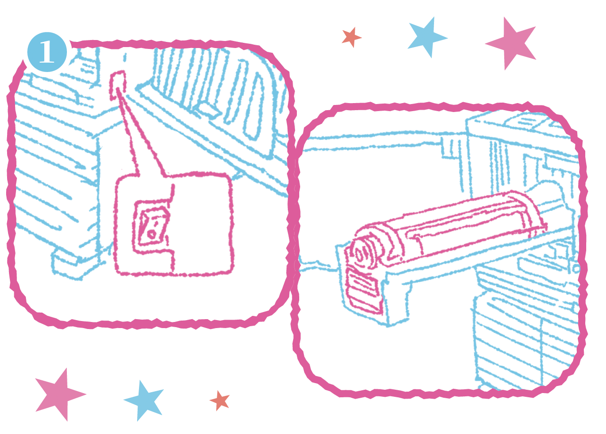Place your paper stack on the left feeder tray and lock the sizing tray to prevent jams; printed sheets will come out on the right.
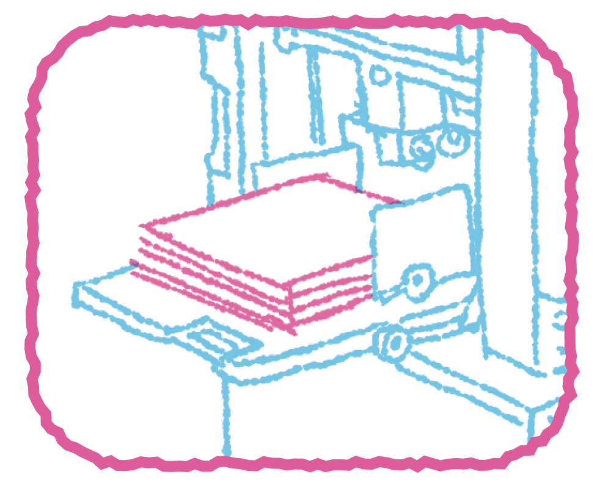2. Send your design file to the Risograph - this must be in grayscale. You can either connect via a computer or use the machine's scanner bed. During this step you can choose between Grain Touch or Screen Cover to process your design.
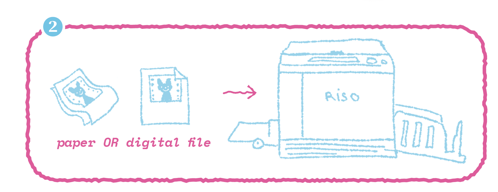*Personally, I find Grain Touch better for text and gradients, while Screen Cover is better for images and illustrations.
After selecting your desired dithering process, the machine will now create a "master" (also known as a stencil) on the drum and prints two proof sheets.
3.If you are satisfied with the proofs, you're ready to print! Adjust the speed, ink density, and position on the control panel. Use either the blue knob on the paper tray or the control panel to set vertical alignment. This is essential for multi-color prints.
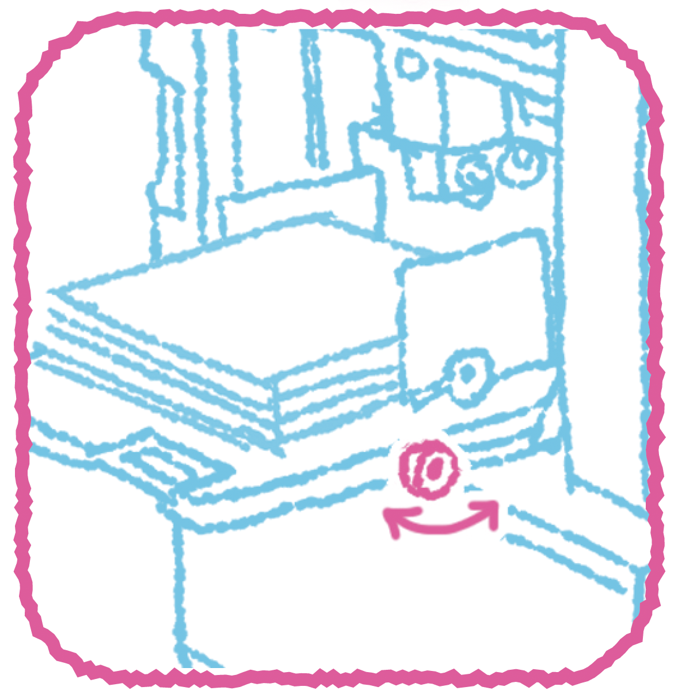Once you get a hang of the process, feel free to experiment with multicolored prints or unconventional paper formats! In the next part, we’ll go through how you should prepare your files via spot color process.
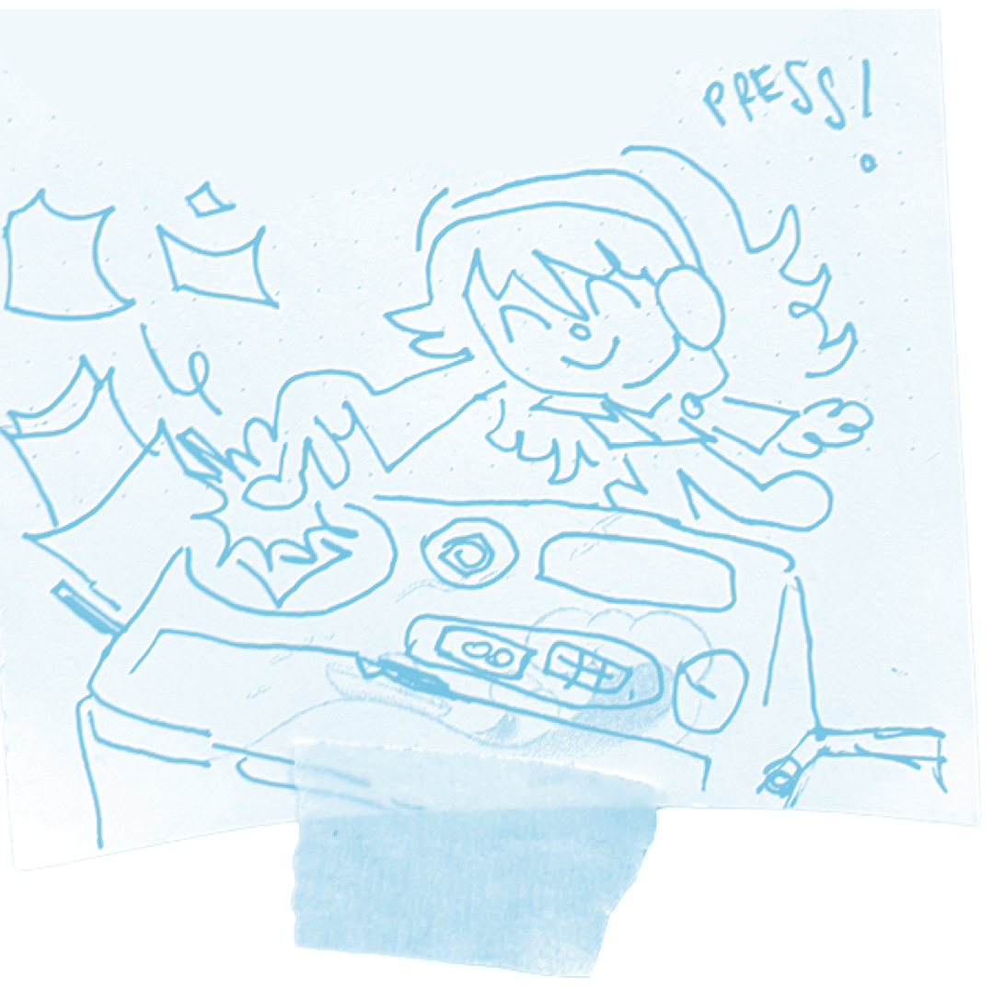Risograph uses spot color, which means each color is printed separately. Unlike traditional full-color printing, which combines four standard inks (cyan, magenta, yellow, and black also known as CMYK) to create a wide range of colors. Risograph uses specific colored inks that are pre-mixed and applied one at a time. These inks are made of soy and rice which makes them environmental friendly but they are also vibrant and translucent, this also allows them to be overlayed on top of each other to create new colors.
Spot color process is method where you draw each color on separate layers and convert them to grayscale. This gives you precise control over color placement and blending. While simple in concept, it requires very careful layer management. Special inks like fluorescent pink (which glows under UV) and metallic colors (with their sparkly finish) work especially well with this method.
1. I made a little program called "Riso-Obscura Photobooth" to help you understand - it’s a web-based tool that splits your webcam feed into three distinct Risograph color layers. You can adjust color combinations, apply borders, and export each color channel as a separate grayscale file ready for Risograph printing.
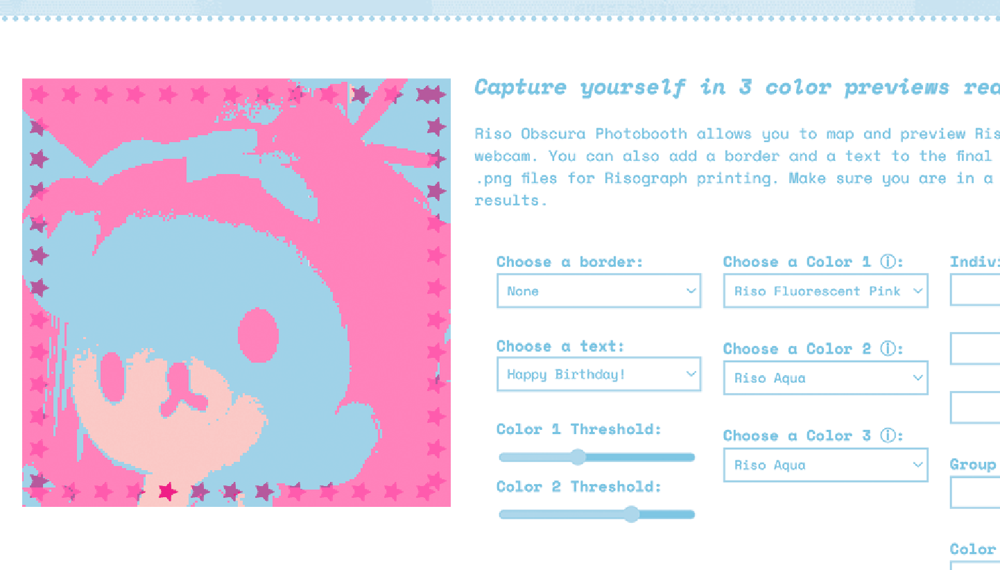Here’s a photo of a Rilakkuma plush using the photobooth, I chose a cute star border and three colors Fluorescent Pink, Aqua and Red.
Now here are are those three colors separately
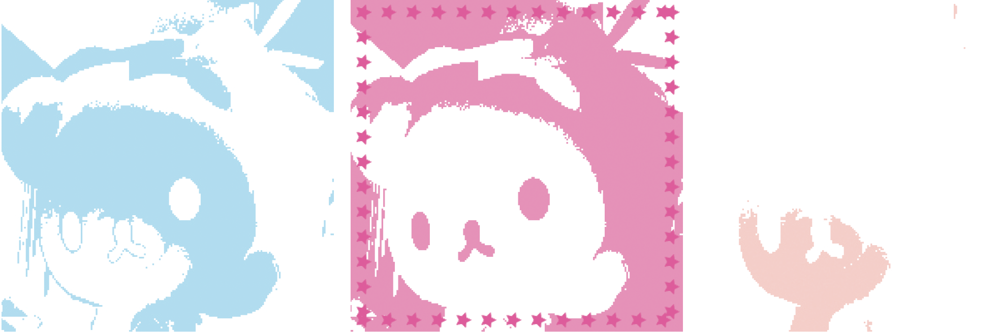Notice how the each channel only contains it’s own information while masking out all other channels in white? This is to prevent unwanted overprinting, remember that the Risograph ink is translucent. To avoid undesired blends between your line art, color & background; set all of your layers to ‘Multiply’ blend mode in your drawing program to preview how your layers will print at the end.
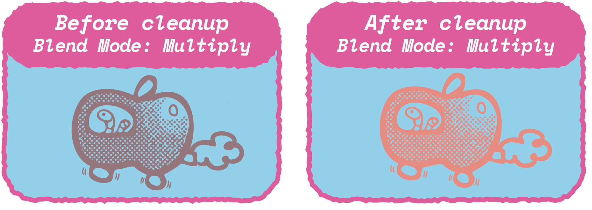Then clear out the overlapping information by selecting the information on your lineart layer, then fill that selection with white on your background layer. Repeat for other layers if needed.
Risograph masters are usually the most costly aspect when it comes to this practice, if your design is smaller than A3, try to lay out as much of those designs possible within a single sheet of A3, then trim or cut them after printing.
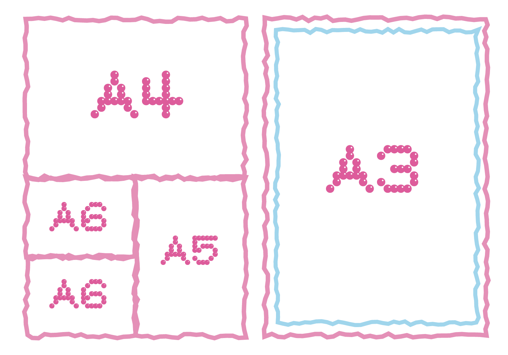The inks are never really fully dried and despite roller marks from the paper feeder being a natural conse- quence of Risograph, there are a few ways you can prevent them:
Now you’ve got your Riso prints, you may wonder what’s the best way to distribute your artwork? There are three ways to get your work out there: online social media presence, in-person at art fairs and consignment.
Art fairs are a great way to connect with other independent studios, designers, artists and publishing houses. Personally, I think they are the most effective way to get your Riso prints seen by the public but it can be exhausting to do table, sales for days in a crowded setting.
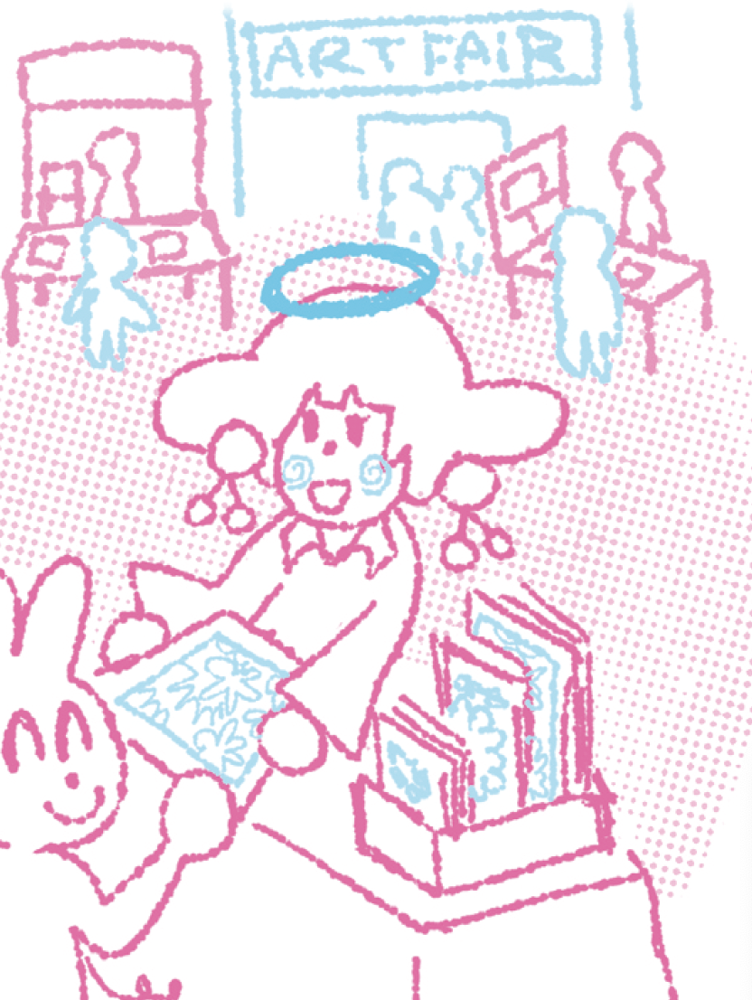Some examples of art fairs in Vietnam:
If you’re not into tabling you can try consignment sales at local DIY or souvenir stores - they'll typically take 25-30% commission and handle the sales for you. Some stores may be selective with what kind of Riso prints but consignment allows you to make passive sales.
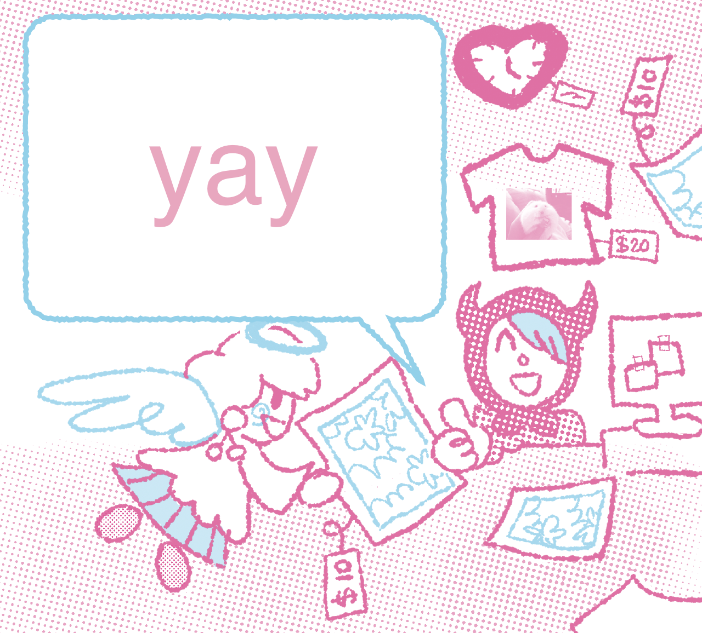Some consignment stores in Vietnam:
Here are a few studios around Ho Chi Minh city that offer service Risograph printing, some will offer discounts for students but please feel free to reach out for collaboration projects and continue to share your love for printmaking!